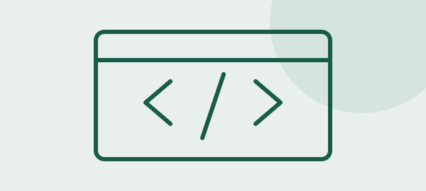
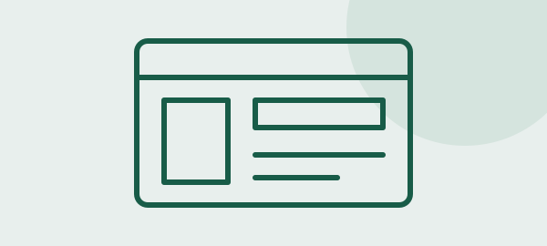
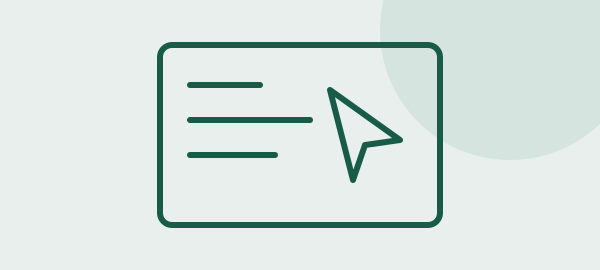

HTML
HTML organiza el contenido de una página mediante etiquetas. Los títulos, párrafos, imágenes y enlaces forman parte de esa estructura. Utilizar elementos como nav y main ayuda a expresar la función de cada sección.
03 / Desarrollo web
Tres tecnologías que trabajan juntas para construir una experiencia web.

HTML organiza el contenido de una página mediante etiquetas. Los títulos, párrafos, imágenes y enlaces forman parte de esa estructura. Utilizar elementos como nav y main ayuda a expresar la función de cada sección.

CSS define la presentación del contenido: colores, tamaños, espacios y distribución. Una hoja de estilos compartida permite mantener el mismo diseño en varias páginas. También permite ajustar la vista para pantallas de distintos tamaños.

JavaScript permite responder a las acciones del usuario. Puede abrir un panel, validar un formulario o actualizar contenido. En este sitio, el archivo de Bootstrap gestiona el menú móvil y los acordeones sin necesitar funciones propias complejas.